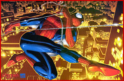
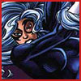
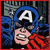
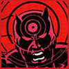
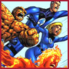
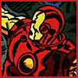

|
|
Allies of
  Black Cat One time love interest and sometime Spidey crime-fighting partner, Felicia Hardy is better known as The Black Cat. Reformed by Spidey from a life of crime, she started her career as a burgler.  Captain America Living legend and star-spangled hero Captain America has been know to help out Spidey on occasion. As leader of The Avengers it was Cap who enlisted Spidey as a reserve Avenger.  Daredevil Daredevil, known as the man without fear, is one of Spider-Man's most frequent "team-ups". Not normally a joiner, the loner aids Spidey with super-enhanced "radar" senses acquired from another freak accident involving radioactive material.  The Fantastic Four Spider-Man and the Fantastic Four, the world's first family of superhuman explorers, share a long history, dating back to the web-slinger's early career. In his own inimitable style, Spider-Man forced his way into the Fantastic Four's heavily guarded headquarters, fought the adventurers to a standstill and bluntly asked for a job-- which, unfortunately, they could not offer him. Iron Man Millionaire industrialist Tony Stark, a modern knight in shining armor as Iron Man has teamed-up with Spidey in several adventures as well. When in need, a fellow Avenger is always welcome. Especially one as powerful as ol' tin head. Other allies:
|